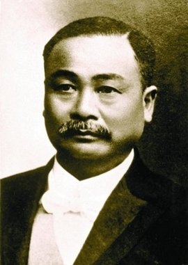
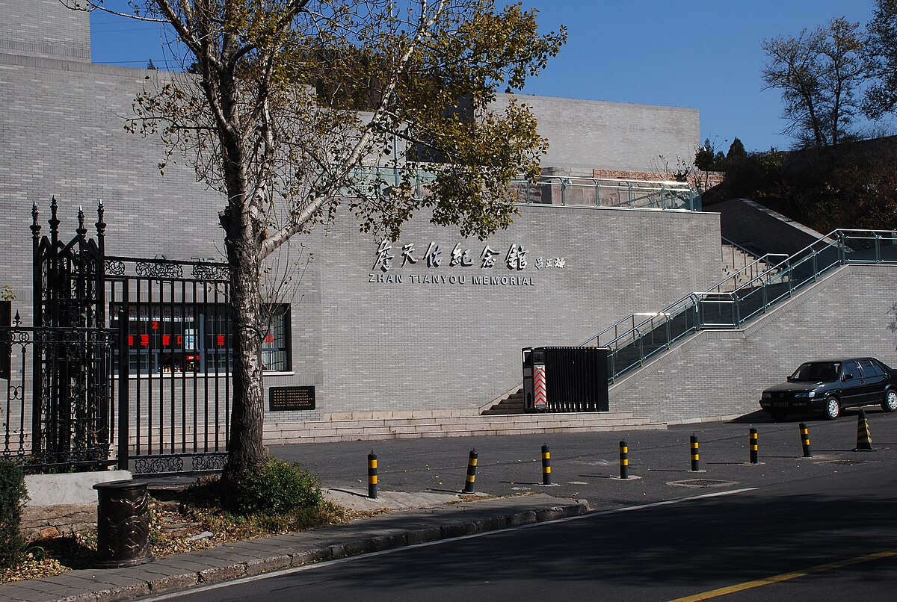

詹天佑先生 (1861-1919)
“铁路是国家的命脉，建设铁路是我一生的使命。”
相关图片展示
京张铁路"人"字形线路

詹天佑纪念馆
詹天佑铁道科学技术奖
詹天佑 - 中国铁路之父
詹天佑（1861 年 4 月 26 日 - 1919 年 4 月 24 日），字眷诚，号达朝，祖籍徽州府婺源县（今江西婺源），出生于广东省南海县（今广州荔湾区），是中国近代铁路工程专家，被誉为"中国铁路之父""中国近代工程之父"。
教育背景
1872 年，11 岁的詹天佑考取清政府第一批官派幼童赴美留学机会，就读于美国康涅狄格州威士哈芬男生学校。1876 年，他以优异成绩考入纽哈芬希尔豪斯中学。1878 年，詹天佑成功考进美国耶鲁大学谢菲尔德工程学院，主修土木和铁路工程专业，并于 1881 年取得耶鲁大学学士学位后回国。
职业经历
1881 年回国后，詹天佑先是被派往福州水师学堂学习兵舰驾驶，1882 年毕业后任海军"杨威"号战舰驾驶官。1884 年，他先后担任福州船政局后学堂英文教习、广州黄埔长洲实学馆外文教习。1885 - 1887 年，詹天佑在广东博学馆教习期间，参与修筑广东沿海炮台，并测绘中国首幅海图。1888 年，经同学邝孙谋推荐，詹天佑进入中国铁路公司任帮办工程师，开启铁路建设生涯。此后，他历任津榆、锦州和萍醴铁路工程师、新易铁路总工程师、京张铁路总办兼总工程师、洛潼铁路顾问总工程师等职。
主要成就
攻克滦河铁桥难题
1893 年，在津榆铁路建设中，滦河铁桥工程遭遇打桩困境，詹天佑重新勘察河床地质，改选桥址，采用压气沉箱法，配以机器打桩和潜水作业，成功建成滦河铁桥。他成为第一个担任铁路工程师的中国人，也是第一个加入英国土木工程师学会的中国工程师。
主持修建京张铁路
1905 年，詹天佑出任京张铁路会办兼总工程师。京张铁路居庸关、八达岭段地势陡峭，施工难度极大。他创造性地运用"人"字形线路，解决了行车陡坡难题；采用"中距凿井法"开凿隧道。1909 年，京张铁路全线通车，这是中国人自主设计和建造的第一条铁路干线。
历史影响与贡献
推动铁路标准化与行业发展
詹天佑在任职交通部首任技监期间，规划全国铁路网；担任"交通部铁路技术委员会"会长时，主持制订铁路工程标准及法规，为中国早期铁路标准化和法规建设奠定基础。他创立中华工程师学会，推动中国现代化工程学术事业发展。
人才培养与技术传承
在铁路修筑过程中，詹天佑言传身教，培养了大批铁路技术人才，为中国铁路事业储备了新生力量。他的工作方法和精神一直影响着后来的铁路建设者。
纪念与传承
- 詹天佑纪念馆：位于北京八达岭长城脚下，展示其生平事迹和贡献
- 詹天佑铁道科学技术奖：中国铁道领域最高奖项之一
- 詹天佑故居：位于广州荔湾区，被列为重点文物保护单位
- 纪念雕像：在全国多地建立了詹天佑先生的纪念雕像